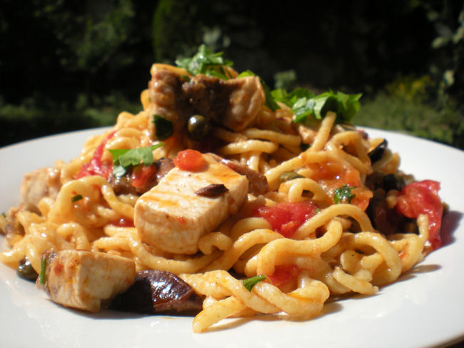

Pasta con pesce spada

Ingredienti:
• 160 g di pasta
•200 g di pesce spada
•200 g di pomodorini
•10 olive nere denocciolate
•50 ml di vino bianco
•1 spicchio d'aglio
• olio extravergine d'oliva
• sale
•basilico o prezzemolo
Procedimento:
1) Preparate le tagliatelle gialle alla carrettiera. Miscelate in una terrina gli amidi, la fecola, la farina, la gomma di guar e lo psyllium. Unite la curcuma e l’acqua al centro, quindi amalgamate con 10 ml di olio e con 5 g di sale. Lavorate energicamente fino a ottenere un composto omogeneo. Create una palla, copritela con la pellicola per alimenti e fatela riposare in frigorifero per 30 minuti.
2) Riprendete la pasta e stendetela con l’apposita macchinetta, portatela a uno spessore di circa 2 mm e piegate la sfoglia prima in 4 e poi in 2. Tagliate dei rotolini di pasta larghi circa 8 mm. Aprite le tagliatelle, spolverizzatele con la farina di riso e lasciatele asciugare per circa 1 ora.
3) Sbucciate gli spicchi di aglio, privateli dell’anima e tritateli finemente. Metteteli in una ciotola capiente, aggiungete il peperoncino tritato, abbondante olio e un pizzico di sale. Mescolate l’emulsione con una frusta o con una forchetta. Lessate le tagliatelle in acqua bollente salata e scolatele al dente, conservando l’acqua di cottura. Trasferite la pasta nella ciotola con il condimento e amalgamate, aggiungendo il Pecorino grattugiato e 1 mestolo di acqua di cottura. Mescolate e, se necessario, unite un filo di olio e altra acqua di cottura. Completate con il prezzemolo tritato e servite.